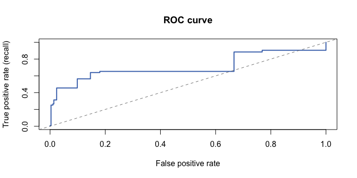

ロジスティック回帰：確率とオッズ
R に入っているタイタニック号のデータ（2,201 人）で、「生き残ったか（1）／亡くなったか（0）」を、客室クラス・性別・年齢層から予測します。回帰が数値を出すのに対し、ロジスティック回帰は「確率」を出します。
d <- as.data.frame(Titanic) # R's built-in Titanic table (2,201 people) ti <- d[rep(seq_len(nrow(d)), d$Freq), c("Class", "Sex", "Age", "Survived")] rownames(ti) <- NULL ti$Survived <- as.integer(ti$Survived == "Yes") set.seed(1) idx <- sample(nrow(ti), size = 0.8 * nrow(ti)) tr <- ti[idx, ] te <- ti[-idx, ] m <- glm(Survived ~ Class + Sex + Age, data = tr, family = binomial) p <- predict(m, newdata = te, type = "response") # probability of survival pred <- as.integer(p >= 0.5) mean(ti$Survived) # overall survival rate round(head(p, 6), 3) # predicted probabilities
係数は対数オッズで出るので、exp() でオッズ比に直すと読みやすくなります。
round(exp(coef(m)), 2)
「Female」のオッズ比は約 11。女性は男性より、生き残るオッズが約 11 倍（他の条件が同じとき）という意味です。「Class3rd」は 1 より小さいので、1 等（基準）より生き残りにくいことを示します。
混同行列
確率にしきい値（既定は 0.5）をかけて、「生存／死亡」の予測に変えます。予測と実際のクロス集計が混同行列です。
table(Truth = te$Survived, Predicted = pred)
| 予測：死亡 (0) | 予測：生存 (1) | |
|---|---|---|
| 実際：死亡 (0) | TN（正しく陰性） | FP（誤って陽性） |
| 実際：生存 (1) | FN（見逃し） | TP（正しく陽性） |
行が「実際」、列が「予測」です。FP は「生存と予測したが実は死亡」、FN は「死亡と予測したが実は生存」。この 4 つの数字から、すべての指標が計算できます。
tab <- table(factor(te$Survived, levels = 0:1), factor(pred, levels = 0:1)) TN <- tab[1, 1]; FP <- tab[1, 2]; FN <- tab[2, 1]; TP <- tab[2, 2] c(TN = TN, FP = FP, FN = FN, TP = TP) accuracy <- (TP + TN) / sum(tab) accuracy
Precision・Recall・F1 と偏ったデータ
正解率（accuracy）は、全体のうち当たった割合ですが、クラスが偏っていると役に立ちません。Precision と Recall を使います。
precision <- TP / (TP + FP) # of those I called "survived", how many really survived? recall <- TP / (TP + FN) # of those who really survived, how many did I find? f1 <- 2 * precision * recall / (precision + recall) round(c(accuracy = accuracy, precision = precision, recall = recall, F1 = f1), 3)
このデータでは Precision が高く（約 0.74）、Recall は低め（約 0.55）です。「生存」と言うときは慎重ですが、生存者の半分近くを見逃しているということです。
偏りが大きいデータでは、正解率がだましになります。陽性が 3% しかない稀なイベント（1,000 件中 30 件）を考えます。
y <- c(rep(1, 30), rep(0, 970)) # 3% positives always_no <- rep(0, 1000) # a model that never predicts a positive c(accuracy = mean(always_no == y), recall = sum(always_no == 1 & y == 1) / sum(y == 1))
| こういうとき | 重視する指標 |
|---|---|
| 見逃しが怖い（病気・不正） | Recall |
| 誤って陽性にしたくない（迷惑メール判定） | Precision |
| 両方のバランス | F1 |
混同行列が TP = 40, FP = 10, FN = 20, TN = 130 のとき、Precision と Recall を求めてください。
TP <- 40; FP <- 10; FN <- 20; TN <- 130 c(precision = TP / (TP + FP), recall = TP / (TP + FN))
Precision = 40/50 = 0.8、Recall = 40/60 ≈ 0.667。
しきい値・ROC・AUC
しきい値を 0.5 から動かすと、Precision と Recall はシーソーのように動きます（片方を上げると、もう片方が下がる）。
score <- function(th) { pr <- as.integer(p >= th) TP <- sum(pr == 1 & te$Survived == 1); FP <- sum(pr == 1 & te$Survived == 0); FN <- sum(pr == 0 & te$Survived == 1) c(threshold = th, precision = TP / (TP + FP), recall = TP / (TP + FN)) } round(t(sapply(c(0.3, 0.5, 0.7), score)), 3)
しきい値を下げると、陽性と言いやすくなり、Recall が上がって Precision が下がります。ROC 曲線は、しきい値を全部動かしたときの「偽陽性率（横軸）」と「真陽性率 = Recall（縦軸）」の軌跡で、その下の面積が AUC です。
auc <- function(y, s) { r <- rank(s); n1 <- sum(y == 1); n0 <- sum(y == 0); (sum(r[y == 1]) - n1 * (n1 + 1) / 2) / (n1 * n0) } ths <- sort(unique(c(0, p, 1)), decreasing = TRUE) roc <- t(sapply(ths, function(th) c(fpr = mean(p[te$Survived == 0] >= th), tpr = mean(p[te$Survived == 1] >= th)))) plot(roc[, 1], roc[, 2], type = "s", lwd = 2, col = "#4471B8", xlab = "False positive rate", ylab = "True positive rate (recall)", main = "ROC curve") abline(0, 1, lty = 2, col = "gray50") round(auc(te$Survived, p), 3)

| AUC | 読み方 |
|---|---|
| 0.5 | 当てずっぽう（対角線） |
| 0.7〜0.8 | まずまず |
| 0.9 以上 | とても良い |
| 1.0 | 完璧（本当に完璧ならデータ漏れも疑う） |
AUC は「ランダムに選んだ陽性と陰性のペアで、陽性の方に高い確率をつけられる割合」です。しきい値に依存しないので、モデル同士の比較に向いています。